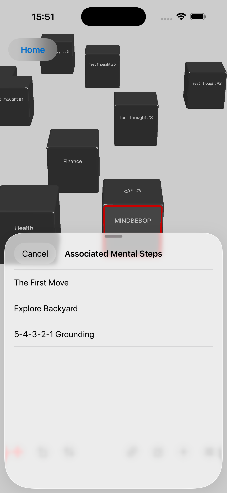

Ein Raum, in dem Gedanken Orte haben können, mögliche Wege verfügbar bleiben und du entscheidest, wann — oder ob — du von ihnen aus irgendwohin gehen möchtest.
Gedanken können durch den Mental Background treiben, während du etwas anderes tust.
Manche ziehen vorbei.
Manche kehren immer wieder zurück.
Manchmal reicht es, deine Beziehung zu einem Gedanken zu verändern.
Du kannst ihn anders betrachten.
Ihn beiseitelegen.
Ihm weniger Aufmerksamkeit geben.
Eine Grenze schaffen.
Oder deiner Aufmerksamkeit einen anderen Ort geben, zu dem sie sich bewegen kann.
Der Gedanke kann sich beruhigen.
Aber manchmal bleibt er.
Der Gedankenraum gibt einem Gedanken einen Ort, an dem er existieren kann, ohne dass du ihn lösen, organisieren oder in eine Aufgabe verwandeln musst.
Und wenn du irgendwann feststellst, dass es einen Ort gibt, zu dem du von diesem Gedanken aus gelangen möchtest, kann dort ein Weg beginnen.
Ein Gedanke kann einen Ort haben
bevor er ein Ziel hat.


Vieles in MINDBEBOP beginnt mit Gedanken, die sich in Worte fassen lassen.
Ein Satz.
Eine Sorge.
Eine Erinnerung.
Eine Idee.
Etwas, das du dir immer wieder sagst.
Etwas, das auftaucht, während deine Aufmerksamkeit eigentlich woanders sein sollte.
Diese sprachlichen Gedanken können durch das treiben, was MINDBEBOP den Mental Background nennt.
MINDBEBOP geht nicht davon aus, dass jeder Gedanke im Mental Background wichtig ist.
Es geht aber auch nicht davon aus, dass jeder wiederkehrende Gedanke bedeutungsloses Rauschen ist.
Unterschiedliche Gedanken können unterschiedliche Beziehungen brauchen.
Manche Gedanken können sich wie Thought Noise verhalten.
Sie können sich wiederholen.
Unterbrechen.
Lauter wirken, als ihre Bedeutung eigentlich rechtfertigt.
Oder sich einfach nur schwer unbeachtet lassen.
Verschiedene MINDBEBOP-Tools bieten unterschiedliche Möglichkeiten, deine Beziehung zu solchen Gedanken zu verändern.
MindFlipOut
Betrachte einen wiederkehrenden Gedanken anders.
MindShoutOut
Lege einen Gedanken beiseite, den du gerade nicht mit dir tragen musst.
MindZoneOut
Gib einem überlasteten Kopf einen ruhigen Moment.
MindBackOut
Schaffe etwas Abstand zu ausgewählten Apps.
MindBackyard
Gib deiner Aufmerksamkeit Raum, sich zu bewegen.
Manchmal kann diese Veränderung der Beziehung ausreichen.
Der Gedanke beruhigt sich.
Nichts weiter muss geschehen.
Aber manchmal bleibt ein Gedanke.
Und daraus ergibt sich eine Frage, die MINDBEBOP zu erforschen beginnt:
Wenn es nicht ausreicht, unsere Beziehung zu einem Gedanken zu verändern,
könnte es dann manchmal trotzdem einen Ort geben, zu dem wir von ihm aus gelangen möchten?
Das ist eine Hypothese.
MINDBEBOP geht nicht davon aus, dass jeder hartnäckige Gedanke ein verborgenes Ziel oder eine Destination enthält.
Der Gedankenraum gibt uns einen Ort, an dem wir das herausfinden können.
Mental Shelving bedeutet, etwas bewusst mental beiseitezulegen, sodass es nicht in deiner unmittelbaren Aufmerksamkeit bleiben muss.
Der Gedanke ist dadurch nicht unbedingt gelöst.
Er ist nicht unbedingt vergessen.
Du erlaubst dir, ihn vorerst zurückzulassen und ihn gleichzeitig verfügbar zu halten, damit du später zu ihm zurückkehren kannst.
Der Gedankenraum macht diesen Vorgang räumlich.
Gedanke
↓
Thought Block
↓
Gib ihm einen Ort im Gedankenraum
↓
Lass ihn dort
↓
Kehre zurück, wenn du möchtest
Wir nennen das Spatial Mental Shelving.
Das „Shelving“ ist kein physisches oder grafisches Regal.
Es ist der mentale Vorgang, etwas beiseitezulegen.
Der Gedankenraum gibt diesem Vorgang einen sichtbaren, beständigen Ort im Raum.
Ein Thought Block kann einfach irgendwo in diesem Raum existieren.
Ein regalartiges Objekt ist nicht erforderlich.
Keine Kategorie ist erforderlich.
Keine Priorität ist erforderlich.
Kein Fälligkeitsdatum ist erforderlich.
Keine Handlung ist erforderlich.
Gib dem Gedanken einen Ort.
Lege ihn beiseite,
ohne ihn zu verlieren.
Die meisten digitalen Systeme verwandeln einen Gedanken in Information.
Gedanke
↓
Text
↓
Listeneintrag
Der Gedankenraum erforscht eine andere Form der Darstellung.
Gedanke
↓
Thought Block
↓
Ort
Ein Thought Block gibt einem Gedanken eine beständige visuelle Präsenz im Raum.
Du kannst ihn bewegen.
Dich um ihn herum bewegen.
Ihn drehen.
Seine Größe verändern.
Näher herangehen.
Dich weiter entfernen.
Ihn irgendwo lassen.
Später zurückkommen.
Oder ihn in Ruhe lassen.
Einen Gedanken zu sehen bedeutet nicht, dass du dich mit ihm befassen musst.
Es gibt einen Unterschied zwischen:
Ich muss mich immer wieder daran erinnern.
und:
Ich weiß, wo das ist.
Spatial Mental Shelving erforscht, ob ein beständiger Ort für einen Gedanken dabei helfen kann, dieses zweite Gefühl entstehen zu lassen.
Der Gedanke bleibt verfügbar.
Aber Verfügbarkeit bedeutet nicht, dass er ständig im Vordergrund bleiben muss.
Die meiste Software bringt Informationen zu deiner Aufmerksamkeit.
Schau dir das an.
Denk daran.
Reagiere darauf.
Mach das als Nächstes.
Der Gedankenraum kann diese Beziehung umkehren.
Der Thought Block kann dort bleiben, wo er ist.
Du entscheidest, ob du dich ihm näherst.
Der Gedanke unterbricht mich nicht.
Ich entscheide mich, mich dem Gedanken zu nähern.
Du kannst ihn erreichen und eine Weile bei ihm bleiben.
Du kannst ihn bewegen.
Du kannst etwas Neues an ihm entdecken.
Oder du kannst dich umdrehen und ihn dort lassen.
Die Entscheidung, dich ihm zu nähern, liegt bei dir.
Die meisten Informationssysteme fordern dich schnell dazu auf, das einzuordnen, was du eingibst.
Welche Kategorie?
Welches Projekt?
Welche Priorität?
Wann ist es fällig?
Der Gedankenraum kann mit einer grundlegenderen Frage beginnen:
Wo möchte ich das haben?
Das kann ausreichen.
Platzierung kann vor Organisation kommen.
Oder Organisation ist vielleicht überhaupt nicht notwendig.
Eine Liste drückt Beziehungen normalerweise durch Reihenfolge, Beschriftungen und Kategorien aus.
Ein Raum kann sie durch Platzierung ausdrücken.
Ein Gedanke kann in der Nähe sein.
Ein anderer kann weiter entfernt sein.
Zwei Gedanken können nah beieinander liegen.
Etwas kann direkt im Blickfeld bleiben.
Etwas anderes kann an einem Ort bleiben, an dem du ihm seltener begegnest.
Der Gedankenraum muss keiner dieser Positionen eine allgemeingültige Bedeutung zuweisen.
Näher muss nicht wichtiger bedeuten.
Weiter entfernt muss nicht weniger wichtig bedeuten.
Kleiner muss nicht weniger bedeutsam bedeuten.
Eine bestimmte Drehung muss nicht für eine bestimmte Art von Gedanken stehen.
Die Anordnung kann einfach widerspiegeln, wie du möchtest, dass diese Gedanken um dich herum existieren.
Du musst nicht immer formell überprüfen, was dir durch den Kopf geht.
Manchmal begegnest du Gedanken einfach, während du dich durch den Gedankenraum bewegst.
Oh, das ist immer noch da.
Jetzt sehe ich das anders.
Diese beiden Dinge könnten zusammenhängen.
Damit möchte ich mich immer noch nicht befassen.
Vielleicht gibt es einen Ort, zu dem ich von hier aus gelangen möchte.
Dann kannst du dich einfach weiterbewegen.
Du musst nicht alles verarbeiten, dem du begegnest.
Der Gedankenraum kann das Wiedersehen mit deinen Gedanken weniger wie das Durcharbeiten eines Posteingangs und mehr wie das Begegnen von Dingen in einer Umgebung wirken lassen.
Der Gedankenraum ist nicht dafür gedacht, jeden Gedanken aufzunehmen, den du hast.
Er ist keine räumliche Rekonstruktion deines gesamten Geistes.
Ein Gedanke kann vorüberziehen.
Eine andere MINDBEBOP-Interaktion kann ausreichen.
Oder du entscheidest, dass ein Gedanke an einem Ort bleiben soll, an dem du ihm später bewusst wieder begegnen kannst.
Diese Entscheidung liegt bei dir.
MINDBEBOP entscheidet nicht automatisch, dass ein Gedanke in den Gedankenraum gehört.
Der Gedankenraum ist ein Ort, an den du ihn bringen kannst, wenn du möchtest.
Ein Thought Block ist nicht dasselbe wie ein Ziel.
Und er ist auch nicht dasselbe wie ein mentales Ziel.
Stell dir einen Thought Block mit dem Namen vor:
Familie
Familie ist kein Ziel.
Aber daraus können unterschiedliche mögliche Richtungen entstehen.
Familie
↙ ↓ ↘
Mehr ungestörte Zeit miteinander verbringen
Mehr finanziellen Spielraum schaffen
Zu Hause geduldiger sein
Diese Richtungen können nebeneinander bestehen.
Sie können zu unterschiedlichen Zeiten wichtig sein.
Sie können sich auf unterschiedlichen Zeitskalen bewegen.
Sie können schließlich zu unterschiedlichen mentalen Zielen führen.
Oder sie werden vielleicht überhaupt nie zu einer Mentalen Navigation.
Ein Thought Block braucht daher keinen einzigen festgelegten Vektor.
Ein Thought Block kann ein Ausgangspunkt sein,
von dem aus mehrere Richtungen möglich sind.
Der Gedankenraum bietet bereits eine konkrete Möglichkeit, mögliche Wege bei einem Gedanken verfügbar zu halten.
Ein Thought Block kann mit gespeicherten Mental Steps in MindEntry verbunden werden.
Ein Thought Block kann mit einem gespeicherten Satz von Mental Steps verbunden sein.
Oder mit mehreren.
Thought Block
↓
Mental Steps
Mental Steps
Mental Steps
Wenn Mental Steps verbunden sind, erscheint direkt auf dem Thought Block ein kleiner Link-Indikator.
Die Zahl zeigt, wie viele verbundene Mental Steps verfügbar sind.
Tippe auf den Indikator, um die Mental Steps zu sehen, die mit diesem Gedanken verbunden sind.
Wähle einen aus, und MindEntry öffnet ihn, sodass du diese Mental Steps von dort aus beginnen kannst.
Dem Gedanken begegnen
↓
Mögliche Wege sehen
↓
Einen auswählen, wenn du möchtest
↓
Mental Steps in MindEntry beginnen
Der Thought Block bleibt der Gedanke.
Die verbundenen Mental Steps bleiben mögliche Wege.
Ob du einen davon gehst, entscheidest weiterhin du.
Mental Steps mit einem Thought Block zu verbinden, verwandelt den Gedanken nicht in eine Aufgabe.
Mental Steps beginnen nicht automatisch.
Ein verbundener Weg muss nicht zum Hauptweg werden.
Mehrere können gleichzeitig verfügbar bleiben.
Und keiner davon muss gegangen werden.
Dieser Gedanke ist hier.
Es gibt Orte, zu denen ich von ihm aus gehen könnte.
Ich muss jetzt nirgendwohin gehen.


Dieser Unterschied ist wichtig.
Der Gedankenraum sollte nicht zu einem System werden, das dein Leben betrachtet und verkündet:
7 Ziele.
23 Schritte.
3 Dinge, die du längst hättest erledigen sollen.
Das würde Möglichkeit in Druck verwandeln.
Der Gedankenraum erforscht die gegenteilige Möglichkeit:
Ein Weg kann verfügbar bleiben,
ohne zu einer Forderung zu werden.
Manchmal näherst du dich einem Thought Block und stellst fest, dass du tatsächlich etwas verändern möchtest.
Es gibt einen Ort, zu dem du von hier aus gelangen möchtest.
Eine mögliche Richtung kann nun zu einer bewusst gewählten Richtung werden.
Vielleicht sind bereits Mental Steps mit dem Thought Block verbunden.
Wenn einer dieser Wege passt, kannst du ihn direkt vom Thought Block aus öffnen und in MindEntry fortfahren.
Oder du stellst fest, dass keiner der vorhandenen Wege zu dem Ort passt, zu dem du jetzt gelangen möchtest.
Die wichtige Veränderung besteht nicht darin, dass der Thought Block zu einer Aufgabe geworden ist.
Sondern darin, dass du eine Richtung gewählt hast.
Gedanke
↓
Mögliche Richtungen
↓
Gewählte Richtung
↓
Mentales Ziel
↓
Mentale Navigation
MindEntry stellt die Navigationsebene bereit.
Du kannst dich durch Mental Steps auf das mentale Ziel zubewegen.
Mach den nächsten Schritt.
Schau, wo du danach bist.
Ändere die Route.
Ändere das mentale Ziel.
Oder fahre von deiner neuen aktuellen Position aus fort.
Dieser Unterschied ist wichtig.
Mentale Navigation beinhaltet eine bewusste Bewegung auf ein mentales Ziel zu.
Aktuelle Position
↓
Mental Steps
↓
Mentales Ziel
Der Gedankenraum erfordert nichts davon.
Du kannst ihn ohne mentales Ziel betreten.
Du kannst dich bewegen, ohne irgendwo ankommen zu wollen.
Du kannst einen Thought Block betrachten, ohne eine Navigation zu beginnen.
Du kannst Mental Steps mit ihm verbunden haben, ohne sie zu starten.
Du kannst mehrere mögliche Richtungen sehen und keine davon wählen.
Der Gedankenraum kann Möglichkeiten bewahren,
bevor sie zu Navigation werden.
MindBackyard enthält verschiedene Räume für unterschiedliche Beziehungen zur Aufmerksamkeit.
Infinite Hallway enthält fast nichts, worüber du nachdenken musst.
Bewege dich.
Wandere.
Lass deine Aufmerksamkeit lockerer werden.
Der Gedankenraum lässt Dinge aus deinem eigenen Geist innerhalb der Umgebung existieren.
Bewege dich.
Bemerke.
Nähere dich.
Richte dich neu aus.
Geh vorbei.
Keiner der beiden Räume erfordert ein Ziel.
Infinite Hallway kann auch Teil einer Mentalen Navigation werden.
Ein Mental Step kann dich für eine Weile dorthin schicken und dich anschließend zum selben aktiven Mental Step zurückbringen, wenn du bereit bist weiterzumachen.
Gedankenraum und Infinite Hallway müssen daher nicht zu derselben Umgebung werden.
Sie können innerhalb des größeren MINDBEBOP-Systems unterschiedliche Rollen spielen.
Das ist vielleicht eine der wichtigsten Regeln im Gedankenraum.
Einen Thought Block zu sehen bedeutet nicht, dass er eine Handlung erfordert.
Einen Thought Block zu bewegen bedeutet nicht, dass du ihn organisierst.
Mental Steps zu verbinden bedeutet nicht, dass sie begonnen werden müssen.
Eine mögliche Richtung zu sehen bedeutet nicht, dass sie zu einem mentalen Ziel werden muss.
Ein Thought Block sollte niemals zu einem roten Badge, einem unerledigten Punkt oder einer Aufforderung werden, den Raum aufzuräumen.
Er kann einfach existieren.
Das ist hier.
Das kann genug sein.
Der Gedankenraum soll kein visueller Aufgabenmanager werden.
Er braucht keine Spalten für To Do, Doing und Done.
Er braucht keine Produktivitätspunkte.
Er braucht keine Streaks.
Er muss dich nicht dafür belohnen, den Raum zu füllen.
Er muss dich nicht dafür belohnen, ihn zu leeren.
Er muss nicht jeden Gedanken in Arbeit verwandeln.
Und er muss nicht jede mögliche Mentale Navigation in eine Verpflichtung verwandeln.
Möglichkeit ist kein Druck.
Der Gedankenraum sollte großzügig und offen bleiben.
Die leeren Bereiche sind kein verschwendeter Bildschirmplatz.
Sie sind Teil der Erfahrung.
Ein Thought Block sollte nicht immer direkt vor dir sein.
Mögliche Wege müssen nicht ständig sichtbar sein.
Die Umgebung sollte nicht ständig um deine Aufmerksamkeit konkurrieren.
Der Raum um einen Gedanken
kann genauso wichtig sein wie
der Gedanke selbst.
Eine räumliche Umgebung sollte es nicht schwierig machen, deine eigenen Gedanken wiederzufinden.
Umherwandern kann nützlich sein, wenn du umherwandern möchtest.
Es sollte nicht verpflichtend werden, wenn du bereits weißt, wonach du suchst.
Erkundung kann räumlich sein.
Wiederfinden sollte einfach bleiben.
Der Gedankenraum sollte niemals zu einem Labyrinth werden, das du pflegen musst.
Der Gedankenraum muss nicht jedes Mal zurückgesetzt werden, wenn du ihn verlässt.
Thought Blocks können dort bleiben, wo du sie platziert hast.
Mental Steps können mit ihnen verbunden bleiben.
Aber deine Beziehung zu diesen Gedanken muss nicht gleich bleiben.
Früher fühlte sich das nah an.
Jetzt möchte ich mehr Abstand davon.
Früher sah ich von hier aus nur eine Richtung.
Jetzt sehe ich mehrere.
Ich dachte, das erfordert eine Handlung.
Jetzt kann ich es einfach in Ruhe lassen.
Die Worte auf dem Thought Block haben sich vielleicht nicht verändert.
Verändert hat sich vielleicht die Art, wie du ihm begegnest.
Die meisten Apps bewahren die neueste Version von Informationen auf.
Der Gedankenraum könnte etwas Leiseres bewahren.
Was in der Nähe blieb.
Was sich entfernte.
Was blieb.
Wozu du zurückgekehrt bist.
Was anders auszusehen begann.
Du kannst nach Tagen, Wochen oder Monaten zurückkehren und bemerken, dass sich der Raum anders anfühlt.
Nicht, weil eine App eine Punktzahl berechnet hat.
Nicht, weil ein Dashboard dir gesagt hat, dass du dich verbessert hast.
Sondern weil du den Unterschied selbst erkennst.
Meine Beziehung dazu hat sich verändert.
Diese Veränderung erfordert keine abgeschlossene Mentale Navigation.
Manchmal kann es ausreichen, etwas zu bewegen, es in Ruhe zu lassen oder ihm anders zu begegnen.
Der Gedankenraum soll nicht jeden Gedanken visualisieren, den du hast.
Er ist keine 3D-Mindmap.
Er muss nicht jede Verbindung offenlegen.
Er muss nicht alles mit allem verbinden.
Manchmal kann es hilfreicher sein, weniger zu sehen.
Ein Thought Block kann existieren, ohne alle seine Beziehungen offenzulegen.
Eine mögliche Richtung kann unerforscht bleiben.
Ein Gedanke kann für sich bleiben.
Der Gedankenraum ist weniger daran interessiert, die Struktur deines Geistes zu rekonstruieren, als dir Möglichkeiten zu geben, bewusst mit dem umzugehen, was da ist.
Der Gedankenraum muss nicht jede Bewegung aufzeichnen oder dein mentales Leben in eine historische Datenbank verwandeln.
Er braucht keine Diagramme, die zeigen, wie oft du einen Thought Block bewegt hast.
Er braucht keine Punktzahl dafür, wie viel Raum du freigeräumt hast.
Der Wert kann viel leiser sein.
Du kehrst in einen vertrauten Raum zurück und bemerkst selbst etwas.
Etwas ist nicht mehr dort, wo es einmal war.
Etwas, das du früher nah bei dir behalten hast, liegt jetzt weiter entfernt.
Etwas, dem du dich früher sofort genähert hast, kann jetzt dort bleiben, wo es ist.
Diese Erkenntnis kann dir gehören statt einem Analysesystem.
Spatial Mental Shelving und die Verbindung zwischen Thought Blocks und Mental Steps machen es bereits möglich, Gedanken Orte zu geben und mögliche Wege mit ihnen verfügbar zu halten.
Aus diesen Ideen ergibt sich eine größere Frage:
Wenn ein Gedanke einen Ort haben kann,
was könnte sonst noch verändern, wie wir ihm begegnen?
Diese Frage führt zu Thought Furniture.
Thought Furniture ist eine experimentelle Idee für Strukturen innerhalb des Gedankenraums, die bestimmte Arten der Interaktion mit Gedanken ermöglichen.
Es ist kein anderer Name für Spatial Mental Shelving.
Spatial Mental Shelving gibt einem Gedanken einen Ort.
Thought Furniture fragt, was passieren könnte, wenn eine Struktur verändert, wie du diesem Gedanken begegnest.
Stell dir einen Thought Block namens A vor.
Unterschiedliches Thought Furniture könnte ganz unterschiedliche Interaktionen erzeugen.
A → eine andere Sicht auf A
A → mögliche Richtungen
A → kleinere Teile
A + B → etwas neu Sichtbares
ABC → CBA
A → vorübergehend außer Sicht
A → Mental Steps
A → ?
Thought Furniture könnte etwas sichtbar machen.
Verbergen.
Filtern.
Trennen.
Kombinieren.
Neu ausrichten.
Transformieren.
Oder eine mögliche Richtung leichter erkennbar machen.
Entscheidend ist nicht, wie das Furniture aussieht.
Entscheidend ist, welche Art von Beziehung zu einem Gedanken die Interaktion ermöglicht.
Thought Furniture ist keine Dekoration.
Es ist ein Experiment im Gestalten von Beziehungen zu Gedanken.
Eine der interessantesten Möglichkeiten von Thought Furniture ist die Perspektive.
Der Thought Block selbst muss sich vielleicht gar nicht verändern.
Was sich verändert, ist möglicherweise die Art, wie du ihm begegnest.
Derselbe Gedanke.
Eine andere Perspektive.
Andere Dinge werden sichtbar.
Eine andere Perspektive könnte eine mögliche Richtung sichtbar machen, die vorher schwer zu erkennen war.
Sie könnte ein bestehendes mentales Ziel anders aussehen lassen.
Sie könnte ein anderes mentales Ziel sichtbar machen.
Oder sie könnte zeigen, dass überhaupt keine Navigation notwendig ist.
Thought Furniture sollte nicht entscheiden, welche Interpretation richtig ist.
Es sollte einen anderen Ort schaffen, von dem aus du schauen kannst.
Thought Orientation ist eine weitere Idee, die MINDBEBOP erforscht.
Manchmal erfordert das Weitergehen eine Veränderung des Ziels.
Manchmal hilft es, das Ziel kleiner zu machen, damit du dich weiterbewegen kannst.
Thought Orientation stellt jedoch eine andere Frage.
Was passiert, wenn ich Point B nicht sofort verändere,
sondern verändere, wie ich darauf schaue?
Dreh es um.
Betrachte es von einem unerwarteten Ort aus.
Sieh, was auftaucht.
Wir wissen noch nicht, was bestimmte Ausrichtungen bedeuten sollten.
Sie brauchen keine festgelegten Definitionen.
Der Gedankenraum gibt uns einen Ort, an dem wir physisch mit dieser Idee experimentieren können.
Eine Perspektive ist keine Antwort.
Eine Transformation ist kein Befehl.
Thought Furniture sollte einen Thought Block nicht betrachten und verkünden, was er bedeutet.
Es sollte dein mentales Ziel nicht bestimmen.
Es sollte nicht automatisch jeden Gedanken in Mental Steps verwandeln.
Stattdessen kann es Bedingungen schaffen, unter denen du selbst etwas bemerkst.
Hier ist eine andere Art, dem zu begegnen.
Was siehst du von hier aus?
Die Interpretation bleibt deine.
Eine Mentale Navigation kann schließlich ihr mentales Ziel erreichen.
Aber anzukommen bedeutet nicht unbedingt, dass der ursprüngliche Thought Block verschwinden muss.
Der Thought Block war nie identisch mit dem Ziel.
Später kann eine andere mögliche Richtung daraus entstehen.
Und die Navigation kann verändern, wie du dem ursprünglichen Gedanken begegnest.
Gedanke
↓
Mentale Navigation
↓
Ankunft
↓
Vielleicht sieht der Gedanke jetzt anders aus
Point B zu erreichen bedeutet nicht, den Gedanken für immer für abgeschlossen erklären zu müssen.
MindAnchor kann etwas aus dem Zustand bewahren, den du durch eine erfolgreiche Mentale Navigation erreicht hast.
Daraus entsteht eine weitere Frage.
Kann etwas, das aus einer erfolgreichen Navigation verankert wurde,
die Perspektive verändern, aus der eine andere beginnt?
Vielleicht bewirkt eine erfolgreiche Navigation mehr, als nur ein mentales Ziel zu erreichen.
Vielleicht kann das, was du dort erlebt hast, später beeinflussen, wie ein anderer Gedanke, eine andere mögliche Richtung oder ein anderer Point B aussieht.
Perspektive
↓
Mentale Navigation
↓
Ankunft
↓
MindAnchor
↓
Zukünftige Perspektive?
MINDBEBOP geht nicht davon aus, dass dies wahr ist.
Es ist etwas, das wir erforschen möchten.
Zusammengenommen deuten diese Experimente auf eine mögliche größere Struktur für MINDBEBOP hin.
Ein sprachlicher Gedanke erscheint im Mental Background.
↓
Eine Veränderung der Beziehung kann ausreichen.
↓
Manchmal bleibt der Gedanke.
↓
Gib ihm einen Ort im Gedankenraum.
↓
Begegne ihm aus verschiedenen Perspektiven.
↓
Mögliche Richtungen können sichtbar werden.
↓
Wähle ein mentales Ziel, wenn es einen Ort gibt, zu dem du gelangen möchtest.
↓
Navigiere.
↓
Komm an.
↓
Verankere etwas von dort, wo du angekommen bist.
↓
Sieh, was beim nächsten Mal anders aussieht.
Das ist keine Regel dafür, wie der Geist funktioniert.
Es ist ein Modell, das MINDBEBOP erforscht.
Manche Gedanken können sich viel früher beruhigen.
Manche können im Gedankenraum bleiben, ohne jemals zu einer Navigation zu werden.
Manche können mehrere mögliche Richtungen hervorbringen.
Manche können irgendwohin führen und später noch einmal woandershin.
Das System muss nicht entscheiden, was davon geschehen sollte.
Der Gedankenraum begann mit einer einfachen Frage:
Was passiert, wenn das Beiseitelegen eines Gedankens
räumlich wird?
Jetzt wird dieses Experiment größer.
Wir können fragen:
Verändert es die Notwendigkeit, einen Gedanken ständig im Gedächtnis zu behalten, wenn wir ihm einen Ort geben?
Fühlt es sich anders an, sich einem Gedanken zu nähern, als von ihm unterbrochen zu werden?
Welche Gedanken beruhigen sich nach einer kleinen Veränderung der Beziehung?
Welche Gedanken bleiben?
Scheinen manche der verbleibenden Gedanken mögliche Richtungen zu haben?
Kann ein Thought Block mehrere mögliche Wege haben, ohne Druck zu erzeugen, einem davon folgen zu müssen?
Kann eine Veränderung der Perspektive eine Richtung sichtbar machen, die vorher nicht offensichtlich war?
Verändert das Erreichen eines mentalen Ziels, wie wir dem ursprünglichen Gedanken später begegnen?
Kann etwas, das aus einer erfolgreichen Navigation verankert wurde, beeinflussen, wie eine andere Navigation gesehen wird?
Wir müssen die Antworten nicht im Voraus kennen.
Der Gedankenraum gibt uns einen Ort, an dem wir sie herausfinden können.
Gib einem Gedanken einen Ort.
Lass ihn dort bleiben, ohne eine Handlung zu verlangen.
Halte mögliche Wege verfügbar, ohne sie in Verpflichtungen zu verwandeln.
Verändere die Perspektive, wenn eine andere Sicht hilfreich sein könnte.
Navigiere, wenn es einen Ort gibt, zu dem du gelangen möchtest.
Und sieh, ob der Ort, an dem du ankommst, verändert, was du als Nächstes sehen kannst.
Der Gedankenraum wird durch MindBackyard als Teil des MINDBEBOP Mental Background OS erforscht.
Mehr über Mentale Navigation erfahren
Copyright © 2026 MINDBEBOP — All rights reserved.